Nikon Coolpix series
The Nikon Coolpix series are digital compact cameras in many variants produced by Nikon. It includes superzoom, bridge, travel-zoom, miniature compact and waterproof/rugged cameras.
Contents
Current models[edit]
Nikon Coolpix cameras are organized into five different lines. The line in which a particular camera is placed is indicated by the letter which is the first character of its model number. The lines are: the (A) series, the (AW) all weather series, the (L) life series, the (P) performance series, and the (S) style series.[1]
A Series[edit]
The Coolpix A Series is Nikon's new flagship point and shoot camera.
| Model | Release date | Sensor res., size |
Lens (35 mm equiv.) zoom, aperture |
Screen size, pixels |
Dimensions W (mm) × H (mm) × D (mm) |
Weight | Image | Features | Ref. |
|---|---|---|---|---|---|---|---|---|---|
| Nikon Coolpix A | Mar 5, 2013 | 16 MP 4928x3264 APS-C DX Sensor |
18,5 mm (28 mm equiv.) f/2.8 |
3.0 in 921,000 |
111 × 64.3 × 40.3 | 299 g (w/batt.) |
Flagship APS-C DX sized-sensor camera, 18.5 mm lens (28 mm equiv.), SD card storage, 1080p 30/25/24P video recording, WiFi Ready | [2] |
All Weather Series[edit]
| Model | Release date | Sensor res., size |
Lens (35 mm equiv.) zoom, aperture |
Screen size, pixels |
Dimensions W (mm) × H (mm) × D (mm) |
Weight | Image | Features | Ref. |
|---|---|---|---|---|---|---|---|---|---|
| AW100 | Aug 24, 2011 | 16 MP 4608x3456 1/2.3 in |
28–140 mm (5×) f/3.9–4.8 |
3.0 in 460,000 |
110.1 × 64.9 × 22.8 | 178 g (w/batt.) |
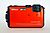 | First ruggedised Coolpix, water resistant to 10 m, shock resistant from 1.5 m, cold resistant to -10 °C, backside illuminated CMOS sensor, electronic and lens-based Vibration Reduction, SD card storage, 1080p video recording, GPS geotagging | [3] |
| AW100s | 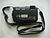 | AW100 without GPS map capability |
B Series[edit]
| Model | Release date | Sensor res., size |
ISO | RAW | GPS | Lens (35 mm equiv.) zoom, aperture |
Screen size, pixels |
Dimensions W (mm) × H (mm) × D (mm) |
Weight | Image | Features | Ref. |
|---|---|---|---|---|---|---|---|---|---|---|---|---|
| B500 | Feb 23, 2016 | 16 MP 4608x3456 1/2.3 in |
125–6400 | No | No | 22.5–900 mm (40×) f/3.3–6.5 |
3.0 in 921,000 |
113.5 × 78.3 × 94.9 | 542 g (w/battery.) |
no RAW (only JPEG), Wi-Fi, Bluetooth, Near Field Communication, SD card storage, 1080p (1920x1080) 30/25P 60/50i video recording, CMOS sensor, AA batteries (Nikon battery EN-MH2 also available) | [4] | |
| B700 | Feb 23, 2016 | 20.2 MP 5184x3888 1/2.3 in |
100–3200 | yes | No | 24–1440 mm (60×) f/3.3–6.5 |
3.0 in 921,000 |
125 × 85 × 106.5 | 570 g (w/battery.) |
RAW, Wi-Fi, Bluetooth, Near Field Communication, SD card storage, 4K UHD (3840x2160) 30/25P video recording, CMOS sensor | [5] |
Life Series[edit]
| Model | Release date | Sensor res., size |
Lens (35 mm equiv.) zoom, aperture |
Screen size, pixels |
Dimensions W (mm) × H (mm) × D (mm) |
Weight | Image | Features | Ref. |
|---|---|---|---|---|---|---|---|---|---|
| L25 | Feb 1, 2012 | 10.1 MP 3648x2736 1/3 in |
28–140 mm (5×) f/2.7–6.8 |
3 in 230 kpixel |
96.2 × 60.4 × 29.2 | 171 g (w/battery.) |
Uses 2 AA batteries, CCD sensor, electronic Vibration Reduction, SD card storage | [6] | |
| L26 | 16.1 MP 4608x3456 1/2.3 in |
26–130 mm (5×) f/3.2–6.5 |
3 in 230 kpixel |
96.0 × 59.7 × 28.8 | 164 g (w/battery.) |
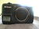 | Uses 2 AA batteries, CCD sensor, electronic Vibration Reduction, SD card storage | ||
| L27 | Jan 28, 2013 | 16.1 MP 4608x3456 1/2.3 in |
26–130 mm (5×) f/3.2–6.5 |
3 in 230 kpixel |
96.0 × 59.7 × 28.8 | Uses 2 AA batteries, CCD sensor, electronic Vibration Reduction, SD card storage | [7] | ||
| L28 | 20.1 MP 5152x3864 1/2.3 in |
26–130 mm (5×) f/3.2–6.5 |
3 in 230 kpixel |
96.0 × 59.7 × 28.8 | 169 g (w/battery.) |
Uses 2 AA batteries, CCD sensor, electronic Vibration Reduction, SD card storage | |||
| L29 | 16.1MP | 5x | Uses 2 AA batteries, CCD Sensor, SD Card storage | ||||||
| L310 | 14.1 MP 4320x3240 1/2.3 in |
25–525 mm (21×) f/3.1–5.8 |
3 in 230 kpixel |
109.9 × 76.5 × 78.4 | 435 g (w/battery.) |
Uses 4 AA batteries, CCD sensor, sensor shift and electronic Vibration Reduction, SD card storage | [8] | ||
| L610 | Aug 9, 2012 | 16.0 MP 4608x3456 1/2.3 in |
25–350 mm (14×) f/3.1–5.8 |
3 in 460 kpixel |
108.0 × 68.4 × 34.1 | 240 g (w/battery.) |
Uses 2 AA batteries, CMOS sensor, lens shift Vibration Reduction, SD card storage | [9] | |
| L810 | Feb 1, 2012 | 16.1 MP 4608x3456 1/2.3 in |
22.5–585 mm (26×) f/3.1–5.9 |
3 in 921 kpixel |
111.1 × 76.3 × 83.1 | 430 g (w/battery.) |
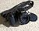 | Uses 4 AA batteries, CCD sensor, lens shift Vibration Reduction, SD card storage | [6] |
| L820 | Jan 28, 2013 | 16.1 MP 4608x3456 1/2.3 in |
22.5–675 mm (30×) f/3.0–5.8 |
3 in 921 kpixel |
111.0 × 76.3 × 84.5 | 470 g (w/battery.) |
Uses 4 AA batteries, CMOS sensor, lens shift Vibration Reduction, SD card storage | [10] | |
| L840 | 16 MP 4608x3456 1/2.3 in |
22.5–855 mm (38×) f/3.0–6.5 |
3 in 921 kpixel |
113.5 × 78.3 × 96.0 | 538 g (w/battery.) |
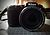 | Uses 4 AA batteries, CMOS sensor, lens shift Vibration Reduction, SD card storage | [11] |
Performance Series[edit]
| Model | Release date | Sensor res., size |
Lens (35 mm equiv.) zoom, aperture |
Screen size, pixels |
Dimensions W (mm) × H (mm) × D (mm) |
Weight | Image | Features | Ref. |
|---|---|---|---|---|---|---|---|---|---|
| P310 | Feb 1, 2012 | 16.1 MP 4608x3456 1/2.3 in |
24–100 mm (4.2×) f/1.8–4.9 |
3 in, 920 k pixel | 103.0 × 58.3 × 32.0 | 194 g (With battery and SD card) |
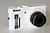 | Compact 4.2× zoom camera, 16 MP CMOS sensor, lens-shift vibration reduction, 1080p video recording with stereo sound. SD/SDHC/SDXC support, Li-ion battery | [12] |
| P510 | 24–1000 mm (42×) f/3.5–5.9 |
3 in, 920 k pixel Tilting screen | 119.8 × 82.9 × 102.2 | 555 g (With battery and SD card) |
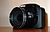 | 42× superzoom camera, 16.1 MP CMOS sensor, Built in GPS, 4 focus modes, Tilting LCD screen, lens shift vibration reduction, 1080p video recording with stereo sound, VGA 640x480, SD/SDHC/SDXC support, Eye-Fi capable, Li-ion battery[13] | |||
| P520 | Jan 29, 2013 | 18 MP 4896x3672 1/2.3 in |
24–1000 mm (42×) f/3-5.9 |
3.2 in, approx. 921 k pixel, Articulating screen | 125.2 × 84.1 × 101.6 | 550 g w/ battery and SD memory card | 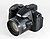 | 42× superzoom camera, 18.1 MP backside-illuminated CMOS sensor, Built in GPS, Fully Articulated LCD screen, Active vibration compensation, 1080i 60/50 video w/ stereo audio, Hi-2 ISO (12800), Target-find AF, 7 FPS burst shooting, COOLPIX Picture Control, SD/SDHC/SDXC support, Li-ion battery, 3 available body colors | [14] |
| P530 | 16.1 MP 4608x3456 1/2.3 in |
24–1000 mm (42×) f/3-5.9 |
3 in, approx. 921 k pixel | 122.8 × 84.1 × 98.2 | 494 g w/ battery and SD memory card | 42× superzoom camera, 16.1 MP CMOS sensor | [15] | ||
| P900 | 16.0 MP 4608x3456 1/2.3 in |
24-2000 mm (83×) f/2.8-6.5 | 3 in. approx. 921 k pixel | 139.5 x 103.2 x 157.4 (5.5 x 4.1 x 5.5 in) | 899 g. w/battery and memory card | 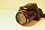 | no RAW (only JPEG), GPS, 83x Superzoom up to digital 8000 mm, ISO 100 - 1600 (3200 - 6400 when using P,S,A, or M), CMOS sensor | [16] | |
| P7700 | Aug 22, 2012 | 12.2 MP 4000x3000 1/1.7 in |
28-200 mm (7.1×) f/2–4 |
3 in, 920 k pixel Tilting screen | 118 × 72 × 50 | 392 g (With battery and SD card) |
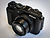 | Compact 7.1× zoom camera, 12.2 MP CMOS sensor, Tilting LCD screen, 1080p video recording with stereo sound, lens-shift vibration reduction, SD/SDHC/SDXC support, Li-ion battery, NRW (RAW) image support. | [17] |
| P7800 | Sep 2013 | 12.2 MP 4000x3000 1/1.7 in |
28-200 mm (7.1×) f/2–4 |
3 in, 920 k pixel Tilting screen; 0.5" viewfinder (EVF) | 118.5 × 77.5 × 50.4 | 399 g (With battery and SD card) |
Compact 7.1× zoom camera, 12.2 MP CMOS sensor, Tilting LCD screen, viewfinder (EVF), 1080p video recording with stereo sound, lens-shift vibration reduction, SD/SDHC/SDXC support, Li-ion battery, NRW (RAW) image support. | [18] |
Style Series[edit]
| Model | Release date | Sensor res., size |
Lens (35 mm equiv.) zoom, aperture |
Screen size, pixels |
Dimensions W (mm) × H (mm) × D (mm) |
Weight | Image | Features | Ref. |
|---|---|---|---|---|---|---|---|---|---|
| S01 | Aug 22, 2012 | 10.1 MP 3648x2736 1/2.9 in |
29–87 mm (3×) f/3.3–5.9 |
2.5 in 230 kpixel |
77 × 51.2 × 17.2 | 96 g (w/batt.) |
CCD sensor, 2.5 in touch screen, 720p HD video recording, electronic Vibration Reduction, 7.3 GB internal memory | [19] | |
| S30 | Feb 1, 2012 | 10.1 MP 3648x2736 1/3 in |
29.1–87.3 mm (3×) f/3.3-5.9 |
2.7 in 230 kpixel |
101.9 × 64.8 × 39.4 | 214 g (w/batt.) |
Compact drop-resistant and waterproof with large buttons and simple interface (designed for kids) | [20] | |
| S800c | Aug 22, 2012 | 16.0 MP 4608x3456 1/2.3 in |
25–250 mm (10×) f/3.2–5.8 |
3.5 in 819 kpixel |
111.4 × 60.0 × 27.2 | 184 g (w/batt.) |
Android 2.3 OS, 3.5 in OLED touchscreen monitor, GPS, Wi-Fi, email, web browsing, music streaming, social networking, Android apps, CMOS sensor, lens-based and electronic Vibration Reduction, 1080p video recording, SD card storage with SDHC and SDXC support | [21] | |
| S1200pj | Aug 24, 2011 | 14.1 MP 4320x3240 1/2.3 in |
28–140 mm (5×) f/3.9–5.8 |
3 in 460 kpixel |
107 × 63.4 × 22.6 | 186 g (w/batt.) |
CCD sensor, built-in projector, electronic and lens-based Vibration Reduction, SD card storage with SDXC support | [22] | |
| S2600 | 14.0 MP 4320x3240 1/2.3 in |
26–130 mm (5×) f/3.2–6.5 |
2.7 in 230 kpixel |
93.8 × 58.4 × 19.5 | 121 g (w/batt.) |
||||
| S2700 | Mar 6, 2013 | 16.0 MP 4608x3456 1/2.3 in |
26–156 mm (6×) f/3.5–6.5 |
2.7 in 230 kpixel |
94.8 × 57.8 × 20.8 | 125 g (w/batt.) |
CCD sensor, built-in projector, SD card storage with SDXC support, Approx. 210 shots with EN-EL19 battery, EXPEED C2 image-processing engine, HD 720p movie recording, Smart portrait system, Subject tracking, Eye-Fi™ card support, Motion blur reduction | [23] | |
| S3300 | Feb 1, 2012 | 16.0 MP 4608x3456 1/2.3 in |
26–156 mm (6×) f/3.5–6.5 |
2.7 in 230 kpixel |
94.8 × 57.8 × 19.5 | 128 g (w/batt.) |
[24] | ||
| S4300 | 16.0 MP 4608x3456 1/2.3 in |
26–156 mm (6×) f/3.5–6.5 |
3 in 460 kpixel |
95.5 × 58.9 × 20.8 | 139 g (w/batt.) |
||||
| S6100 | March 2010 | 16.0 MP | 5.0-35.0mm 1:37-5.6 (7x) | 2.7 | CCD Sensor, Touchscreen, 720p Full HD video recording, SD memory card, | ||||
| S6300 | 16.0 MP 4608x3456 1/2.3 in |
25–250 mm (10×) f/3.2–5.8 |
2.7 in 230 kpixel |
93.6 × 57.7 × 26.0 | 160 g (w/batt.) |
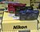 | |||
| S6400 | Aug 22, 2012 | 16.0 MP 4608x3456 1/2.3 in |
25–300 mm (12×) f/3.1–6.5 |
3.0 in 460 kpixel |
95.4 × 58.6 × 26.7 | 150 g (w/batt.) |
CMOS sensor, lens-based Vibration Reduction, 1080p video recording with stereo sound, SD card storage with SDHC and SDXC support | [19] | |
| S6900 | 16.76 MP 1/2.3 in |
25–300 mm (12×) f/3.3–6.3 |
3.0 in 460 kpixel |
99.4 × 58.0 × 27.9 | 181 g (w/batt.) |
CMOS sensor, vibration reduction: lens shift (still images) and electronic (movies), SD card storage with SDHC and SDXC support, articulating screen | [25] | ||
| S7000 | 16 MP | 20x optical zoom | 161 g (w/batt.) | 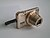 | |||||
| S8000 | 14.0 MP | 10x | 3.0" LCD, CCD sensor, 720p video recording, SD card storage, | ||||||
| S9200 | Feb 1, 2012 | 16.0 MP 4608x3456 1/2.3 in |
25–450 mm (18×) f/3.5–5.9 |
3 in 921 kpixel |
108.7 × 59.8 × 30.6 | 209 g (w/batt.) |
Back-lit CMOS sensor, lens-based Vibration Reduction, 1080p video recording, SD card storage with SDHC and SDXC support | [24] | |
| S9300 | 16.0 MP 4608x3456 1/2.3 in |
25–450 mm (18×) f/3.5–5.9 |
3 in 921 kpixel |
108.7 × 62.3 × 30.6 | 215 g (w/batt.) |
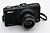 | S9200 with built in GPS | ||
| S9600 | Feb 7, 2014[26] | 16.0 MP 4608x3456 1/2.3 in |
25–550 mm (22×) f/3.4–6.3 |
3 in 460 kpixel |
108.6 × 61.0 × 31.6 | 206 g (w/batt.) |
Back-lit CMOS sensor, built-in Wi-Fi, 5-axis vibration reduction, 1920 x 1080/60i video recording, SD card storage, Charging AC Adapter EH-71P/EH-71PCH. The lens also supports macro photography. | [27] | |
| S9700 | 16.0 MP 4608x3456 1/2.3 in |
25–750 mm (30×) f/3.7–6.4 |
3 in 921 kpixel |
109.6 × 63.5 × 34.5 | 232 g (w/batt.) |
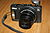 | Back-lit CMOS sensor, built-in Wi-Fi, 5-axis vibration reduction, 1920 x 1080/60i video recording, SD card storage, Charging AC Adapter EH-71P/EH-71PCH. A built-in world map, high-performance GPS/GLONASS function. | [28] | |
| S9900 | Feb 10, 2015[29] | 16.0 MP 4608x3456 1/2.3 in |
25–750 mm (30×) f/3.7–6.4 |
3 in 921 kpixel |
112.0 × 66.0 × 39.5 | 289 g (w/batt.) |
Vari-angle TFT LCD monitor, built-in world map supports GPS/GLONASS/QZSS, CMOS sensor, built-in Wi-Fi, combination of Lens-shift and Electronic vibration reduction, SD, SDHC, SDXC card storage, Full HD 1080p videos. | [30] |
Discontinued models[31][edit]
Life Series[edit]
| Model | Release date | Sensor res., size |
Lens (35 mm equiv.) zoom, aperture |
Screen size, pixels |
Dimensions W (mm) × H (mm) × D (mm) |
Weight | Image | Features | Ref. |
|---|---|---|---|---|---|---|---|---|---|
| L1 | Sep 1, 2005 | 6.2 MP 2816x2112 1/2.5" |
38–190 mm (5×) f/2.9–5 |
2.5" 115,000 |
89.5 × 60.5 × 47 | 180 g (w/out batt.) |
CCD sensor, AA batteries, D-Lighting, Face-priority AF | [32] | |
| L2 | Feb 21, 2006 | 6.0 MP 2816x2112 1/2.5" |
38–116 mm (3×) f/3.2–5.3 |
2.0" 86,000 |
91 × 60.5 × 26 | 120 g (w/out batt.) |
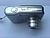 | [33] | |
| L3 | 5.1 MP 2592x1944 1/2.5" |
||||||||
| L4 | 4.0 MP 2272x1704 1/2.5" |
38–114 mm (3×) f/2.8–4.9 |
2.0" 115,000 |
86.5 × 60.5 × 34.5 | 115 g (w/out batt.) |
||||
| L5 | Aug 24, 2006 | 7.2 MP 3072x2304 1/2.5" |
38–190 mm (5×) f/2.9–5 |
2.5" 115,000 |
97 × 61 × 45 | 170 g (w/out batt.) |
CCD sensor, AA batteries, D-Lighting, Face-priority AF, lens-based Vibration Reduction | [34] | |
| L6 | 6.0 MP 2816x2112 1/2.5" |
38–116 mm (3×) f/3.2–5.3 |
91 × 60.5 × 26 | 125 g (w/out batt.) |
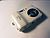 | CCD sensor, AA batteries, D-Lighting, Face-priority AF | [35] | ||
| L10 | Feb 20, 2007 | 5.0 MP 2560x1920 1/2.5" |
37.5–112.5mm (3×) f/2.8–5.2 |
2.0" 153,000 |
89.5 × 60.5 × 26 | 115 g (w/out batt.) |
[36] | ||
| L11 | 6.0 MP 2816x2112 1/2.5" |
2.4" 115,000 |
89.5 × 60.5 × 27 | 125 g (w/out batt.) |
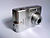 | CCD sensor, AA batteries, D-Lighting, Face-priority AF, ImageLink | |||
| L12 | 7.1 MP 3072x2304 1/2.5" |
35–105 mm (3×) f/2.8–4.7 |
2.5" 115,000 |
91 × 61 × 26 | 125 g (w/out batt.) |
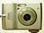 | CCD sensor, AA batteries, D-Lighting, Face-priority AF, lens-based Vibration Reduction, up to ISO 1600 | [37] | |
| L14 | Aug 30, 2007 | 38–114 mm (3×) f/3.1–5.9 |
2.4" 115,000 |
90.5 × 61.5 × 27 | 115 g (w/out batt.) |
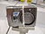 | CCD sensor, AA batteries, D-Lighting, Face-priority AF, stop motion video, up to ISO 1000 | [38] | |
| L15 | 8.0 MP 3246x2448 1/2.5" |
35–105 mm (3×) f/2.8–4.7 |
2.8" 230,000 |
91 × 61 × 29.5 | 125 g (w/out batt.) |
CCD sensor, AA batteries, D-Lighting, Face-priority AF, lens-based Vibration Reduction | [39] | ||
| L16 | Jan 29, 2008 | 7.1 MP 3072x2304 1/2.5" |
2.8" 230,000 |
95 × 61 × 29.5 | 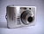 | CCD sensor, AA batteries, D-Lighting, Face-priority AF, up to ISO 1600 | [40] | ||
| L18 | 8.0 MP 3264x2448 1/2.5" |
3.0" 230,000 |
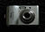 | ||||||
| L19 | Feb 3, 2009 | 41–145 mm (3.6×) f/3.1–6.7 |
2.7" 230,000 |
96.5 × 61 × 29 | 130 g (w/out batt.) |
[41] | |||
| L20 | 10.0 MP 3648x2736 1/2.3" |
38–136 mm (3.6×) f/3.1–6.7 |
3.0" 230,000 |
135 g (w/out batt.) |
|||||
| L21 | Feb 3, 2010 | 8 MP 3264x2448 1/2.5" |
41–145 mm (3.6×) f/3.1–6.7 |
2.5" 230,000 |
92 × 61.1 × 28.3 | 169 g (w/batt.) |
Uses AA batteries, CCD sensor, electronic Vibration Reduction, SD card storage | [42] | |
| L22 | 12 MP 4000x3000 1/2.3" |
37–134 mm (3.6×) f/3.1–6.7 |
3" 230,000 |
97.7 × 60.5 × 28.3 | 183 g (w/batt.) |
Uses AA batteries, CCD sensor, electronic Vibration Reduction, SD card storage | |||
| L23 | Feb 9, 2011 | 10.1 MP 3648x2736 1/2.9" |
28–140 mm (5×) f/2.7–6.8 |
2.7" 230,000 |
96.7 × 59.9 × 29.3 | 170 g (w/batt.) |
Uses AA batteries, CCD sensor, electronic Vibration Reduction, SD card storage | [43] | |
| L24 | 14 MP 4320x3240 1/3" |
25–525 mm (21×) (incorrect) f/3.1–6.7 |
3" 230,000 |
60.5 × 97.7 × 28.3 | 182 g (w/batt.) |
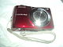 | Uses AA batteries, CCD sensor, electronic Vibration Reduction, SD card storage | ||
| L100 | Feb 3, 2009 | 10.0 MP 3648x2736 1/2.33" |
28–420 mm (15×) f/3.5–5.4 |
3.0" 230,000 |
110 × 72 × 78 | 355 g (w/out batt.) |
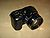 | CCD sensor, AA batteries, D-Lighting, Face-priority AF, lens-based Vibration Reduction, up to ISO 3200 | [44] |
| L110 | Feb 3, 2010 | 12.1 MP 4000x3000 1/2.3" |
28–420 mm (15×) f/3.5–5.4 |
3" 460,000 |
108.9 × 74.3 × 78.1 | 406 g (w/batt.) |
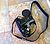 | Uses AA batteries, CCD sensor, sensor-based and electronic Vibration Reduction, up to 6,400 ISO, 720p video recording with stereo sound, SD card storage | [45] |
| L120 | Feb 9, 2011 | 14.1 MP 4320x3240 1/2.3" |
25–525 mm (21×) f/3.1–5.8 |
3" 920,000 |
109.9 × 76.5 × 78.4 | 431 g (w/battery.) |
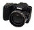 | Uses AA batteries, CCD sensor, sensor-based and electronic Vibration Reduction, up to 6,400 ISO, 720p video recording with stereo sound, SD card storage | [43] |
Performance Series[edit]
| Model | Release date | Sensor res., size |
Lens (35 mm equiv.) zoom, aperture |
Screen size, pixels |
Dimensions W (mm) × H (mm) × D (mm) |
Weight | Image | Features | Ref. |
|---|---|---|---|---|---|---|---|---|---|
| P1 | Sep 1, 2005 | 8.0 MP 3264x2448 1/1.8" |
36–126 mm (3.5×) f/2.7–5.2 |
2.5" 110,000 |
91 × 60 × 39 | 170 g (w/out batt.) |
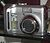 | CCD sensor, electronic Vibration Reduction (during video), aperture priority mode, Wireless 802.11b/g transfer support. | [46] |
| P2 | 5.0 MP 2592x1944 1/1.8" |
 |
|||||||
| P3 | Feb 21, 2006 | 8.1 MP 3264x2448 1/1.8" |
36–126 mm (3.5×) f/2.7–5.3 |
92 × 61 × 31 | CCD sensor, lens-based Vibration Reduction, Wireless 802.11b/g transfer support. | [47] | |||
| P4 | 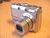 | P3 without Wireless 802.11b/g transfer support. | |||||||
| P50 | Aug 30, 2007 | 8.1 MP 3264x2448 1/2.5" |
28–102 mm (3.6×) f/2.8–5.6 |
2.4" 115,000 |
94.5 × 66 × 44 | 160 g (w/out batt.) |
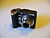 | CCD sensor, AA batteries, electronic Vibration Reduction, sensitivity up to ISO 2000. | [48] |
| P60 | Jan 29, 2008 | 36–180 mm (5×) f/3.6–4.5 |
2.5" 153,000 |
95.5 × 63.5 × 36 | CCD sensor, AA batteries, sensor-based Vibration Reduction, D-Lighting, Face-priority AF, sensitivity up to ISO 2000. | [49] | |||
| P80 | Apr 10, 2008 | 10.1 MP 3648x2736 1/2.33" |
27–486 mm (18×) f/2.8–4.5 |
2.7" 230,000 |
110 × 79 × 78 | 365 g (w/out batt.) |
CCD sensor, lens-based Vibration Reduction, sensitivity up to ISO 6400, 6 frame/s continuous shooting. | [50] | |
| P90 | Feb 3, 2009 | 12.1 MP 4000x3000 1/2.33" |
26–624 mm (24×) f/2.8–5 |
3" 230,000 |
114 × 83 × 99 | 460 g (w/out batt.) |
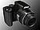 | CCD sensor, variable angle LCD screen, sensor-based Vibration Reduction, sensitivity up to ISO 6400. | [51] |
| P100 | Feb 3, 2010 | 10.3 MP 3648x2736 1/2.3" |
26–678 mm (26×) f/2.8–5 |
3" 460,000 |
114.4 × 82.7 × 98.6 | 481 g (w/batt.) |
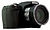 | 10 frame/s shooting, back illuminated CMOS sensor, 1080p HD video recording with stereo sound, tilting LCD, sensor-based Vibration Reduction, SD card storage | [45] |
| P300 | Feb 9, 2011 | 12.2 MP 4000x3000 1/2.3" |
24–100 mm (4.2×) f/1.8–4.9 |
3" 921,000 |
103 × 58.3 × 32 | 189 g (w/batt.) |
Back illuminated CMOS sensor, fast f/1.8 lens, 1080p video recording, lens-based Vibration Reduction, SD(SDHC, SDXC) card storage | [52] | |
| P500 | 12.1 MP 4000x3000 1/2.3" |
22.5–810 mm (36×) f/3.4–5.7 |
115.5 × 83.7 × 102.5 | 494 g (w/batt.) |
CMOS sensor, sensor-based and electronic Vibration Reduction, tiltable LCD screen, EXPEED C2 dual image processors, 1080p video recording with stereo sound, SD(SDHC, SDXC) card storage | ||||
| P5000 | Feb 20, 2007 | 10.0 MP 3648x2736 1/1.8" |
36–126 mm (3.5×) f/2.7–5.3 |
2.5" 230,000 |
98 × 64.5 × 41 | 200 g (w/out batt.) |
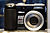 | CCD sensor, lens-based Vibration Reduction, sensitivity up to ISO 3200. | [53] |
| P5100 | Aug 30, 2007 | 12.1 MP 4000x3000 1/1.72" |
35–123 mm (3.5×) f/2.7–5.3 |
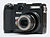 | CCD sensor, lens-based Vibration Reduction, Magnesium alloy body, sensitivity up to ISO 3200. | [54] | |||
| P6000 | Aug 7, 2008 | 13.5 MP 4224x3168 1/1.7" |
28–112 mm (4×) f/2.7–5.9 |
2.7" 230,000 |
107 × 65.5 × 42 | 240 g (w/out batt.) |
CCD sensor, built-in GPS geotagging, lens-based Vibration Reduction, sensitivity up to ISO 6400. | [55] | |
| P7000 | Sep 8, 2010 | 10.2 MP 3264x2448 1/1.7" |
28–200 mm (7.1×) f/2.8–5.6 |
3" 921,000 |
114.2 × 77 × 44.8 | 360 g (w/batt.) |
10 frame/s shooting, 1/1.7" CCD sensor, 720p HD video recording with stereo sound, lens-based Vibration Reduction, SD card storage with SDXC support, NRW (RAW) image support. | [56] | |
| P7100 | Aug 26, 2011 | 10.1 MP 3648x2736 1/1.7" |
28–200 mm (7.1×) f/2.8–5.6 |
116 × 77 × 48 | 395 g (w/batt.) |
Tilting LCD screen, CCD sensor, 720p HD video recording with stereo sound, lens-based Vibration Reduction, SD card storage with SDXC support, NRW (RAW) image support. | [57] |
Style Series[edit]
| Model | Release date | Sensor res., size |
Lens (35 mm equiv.) zoom, aperture |
Screen size, pixels |
Dimensions W (mm) × H (mm) × D (mm) |
Weight | Image | Features and notes | Ref. |
|---|---|---|---|---|---|---|---|---|---|
| S1 | Mar 16, 2005 | 5.1 MP 2592x1944 1/2.5″ |
35–105 mm (3×) f/3–5.4 |
2.5″ 110,000 |
89.9 × 57.5 × 19.7 | 118 g (w/out batt.) | Aluminium body, CCD sensor, 17 scene modes, SD card storage. First Style series camera. | [58] | |
| S2 | May 18, 2005 | 91.9 × 59 × 22 | 140 g (w/out batt.) | Weather sealed Aluminium body, CCD sensor, 17 scene modes, SD card storage. | [59] | ||||
| S3 | Sep 1, 2005 | 5.9 MP 2816x2112 1/2.5″ |
89.9 × 57.5 × 19.7 | 118 g (w/out batt.) | Aluminium body, CCD sensor, 17 scene modes, Face-priority AF, SD card storage. | [60] | |||
| S4 | 38–380 mm (10×) f/3.5 |
111.5 × 68.5 × 37 | 205 g (w/out batt.) | Uses AA batteries, CCD sensor, 17 scene modes, swivel lens design, Face-priority AF, SD card storage. | [61] | ||||
| S5 | Feb 21, 2006 | 35–105 mm (3×) f/3–5.4 |
3″ 230,000 |
93 × 59 × 20 | 135 g (w/out batt.) | CCD sensor, 15 scene modes, Pictmotion, Face-priority AF, SD card storage. | [62] | ||
| S6 | 100.5 × 60 × 21 | 140 g (w/out batt.) | CCD sensor, 15 scene modes, Pictmotion, Face-priority AF, Wireless b/g transfer support, SD card storage. | ||||||
| S7 | Aug 24, 2006 | 7.1 MP 3072x2304 1/2.5″ |
35–105 mm (3×) f/2.8–5 |
100.5 × 60 × 21 | 135 g (w/out batt.) | CCD sensor, electronic Vibration Reduction, Pictmotion, Face-priority AF, SD card storage. | [63] | ||
| S7c | 140 g (w/out batt.) | S7 with Wireless 802.11b/g transfer support. | |||||||
| S8 | 2.5″ 230,000 |
93 × 59 × 20 | 135 g (w/out batt.) | CCD sensor, electronic Vibration Reduction, Pictmotion, Face-priority AF, SD card storage. | |||||
| S9 | 5.9 MP 2816x2112 1/2.5″ |
38–114 mm (3×) f/3.5–4.3 |
2.5″ 153,600 |
90.5 × 58 × 20.4 | 115 g (w/out batt.) | CCD sensor, Stop-motion video, Pictmotion, Face-priority AF, SD card storage. | [64] | ||
| S10 | 6 MP 2816x2112 1/2.5″ |
38–380 mm (10×) f/3.5 |
2.5″ 230,000 |
112.5 × 74.5 × 40.5 | 220 g (w/out batt.) | CCD sensor, sensor-based Vibration Reduction, Pictmotion, swivel lens design, Face-priority AF, SD card storage. | [65] | ||
| S50 | Feb 20, 2007 | 7.2 MP 3072x2304 1/2.5″ |
38–114 mm (3×) f/3.3–4.2 |
3″ 230,000 |
92.5 × 59 × 21 | 125 g (w/out batt.) | CCD sensor, lens-based Vibration Reduction, Pictmotion, SD card storage. | [66] | |
| S50c | 97.5 × 59 × 21 | S50 with Wireless 802.11b/g transfer support. | [67] | ||||||
| S51 | Aug 30, 2007 | 8.1 MP 3246x2448 1/2.5″ |
92.5 × 59 × 21 | CCD sensor, lens-based Vibration Reduction, Pictmotion, SD card storage. | [68] | ||||
| S51c | 97.5 × 59 × 21 | S51 with Wireless 802.11b/g transfer support. | |||||||
| S52 | Apr 10, 2008 | 9.0 MP 3456x2592 1/2.5″ |
93 × 59 × 21 | CCD sensor, lens-based Vibration Reduction, Pictmotion, SD card storage, sensitivity up to ISO 3200. | [69] | ||||
| S52c | 97.5 × 59 × 21 | S52 with Wireless 802.11b/g transfer support. | |||||||
| S60 | Aug 7, 2008 | 10.0 MP 3648x2736 1/2.3″ |
33–165 mm (5×) f/3.8–4.8 |
3.5″ 230,000 |
97.5 × 60 × 22 | 145 g (w/out batt.) | CCD sensor, 3.5 inch touchscreen LCD, sensor-based Vibration Reduction, Pictmotion, SD card storage, sensitivity up to ISO 3200. | [70] | |
| S70 | Aug 4, 2009 | 12.1 MP 4000x3000 1/2.3″ |
28–140 mm (5×) f/3.9–5.8 |
3.5″ 288,000 |
96.5 × 60.5 × 20 | 140 g (w/o batt.) | OLED touch screen, CCD sensor, lens-based Vibration Reduction, up to 6,400 ISO, SD card storage | [71] | |
| S80 | Sep 8, 2010 | 14.1 MP 4320x3240 1/2.3″ |
35–175 mm (5×) f/3.6–4.8 |
3.5″ 819,000 |
98.8 × 62.6 × 16.5 | 133 g (w/batt.) |
CCD sensor, 3.5″ Widescreen OLED touch screen, 720p HD video recording with stereo sound, lens-based Vibration Reduction, SD card storage with SDXC support | [72] | |
| S100 | Aug 24, 2011 | 16.0 MP 4608x3456 1/2.3" |
28–140 mm (5×) f/3.9–4.8 |
3.5" 820,000 |
99 × 65.2 × 18.1 | 138 g (w/batt.) |
CMOS sensor, 3.5" Widescreen OLED touch screen, 1080p HD video recording with stereo sound, lens-based Vibration Reduction, SD card storage with SDXC support | [73] | |
| S200 | Feb 20, 2007 | 7.1 MP 3072x2304 1/2.5″ |
38–114 mm (3×) f/3.1–5.9 |
2.5″ 153,000 |
91.5 × 56.5 × 18.5 | 125 g (w/out batt.) | CCD sensor, electronic Vibration Reduction, D-Lighting, PictBridge, SD card storage. | [74] | |
| S210 | Jan 29, 2008 | 8.0 MP 3264x2448 1/2.5″ |
2.5″ 230,000 |
90 × 55.5 × 18 | 100 g (w/out batt.) | CCD sensor, electronic Vibration Reduction, D-Lighting, PictBridge, SD card storage. | [75] | ||
| S220 | Feb 3, 2009 | 10.0 MP 3648x2736 1/2.3″ |
35–105 mm (3×) f/3.1–5.9 |
2.5″ 150,000 |
89.5 × 55.5 × 18 | CCD sensor, electronic Vibration Reduction, automatic scene mode selection, D-Lighting, PictBridge, SD card storage. | [76] | ||
| S230 | 3″ 230,000 |
91 × 57 × 20 | 115 g (w/out batt.) | S220 with 3-inch (76 mm) touchscreen LCD | [77] | ||||
| S500 | Feb 20, 2007 | 7.1 MP 3072x2304 1/2.5″ |
35–105 mm (3×) f/2.8–4.7 |
2.5″ 230,000 |
88 × 51 × 22 | 125 g (w/out batt.) | CCD sensor, lens-based Vibration Reduction, SD card storage, sensitivity up to ISO 2000. | [78] | |
| S510 | Aug 30, 2007 | 8.1 MP 3246x2448 1/2.5″ |
[79] | ||||||
| S520 | Jan 29, 2008 | 8.0 MP 3264x2448 1/2.5″ |
2.5″ 153,000 |
94 × 53 × 22 | 115 g (w/out batt.) | [80] | |||
| S550 | 10.0 MP 3648x2736 1/2.3″ |
36–180 mm (5×) f/3.5–5.6 |
2.5″ 230,000 |
90 × 53.5 × 22 | 120 g (w/out batt.) | [81] | |||
| S560 | Aug 7, 2008 | 10.0 MP 3648x2736 1/2.33″ |
34.8–174 mm (5×) f/3.5–5.6 |
2.7″ 230,000 |
93 × 54.5 × 23.5 | 130 g (w/out batt.) | CCD sensor, sensor-based Vibration Reduction, SD card storage, sensitivity up to ISO 3200. | [82] | |
| S570 | Aug 4, 2009 | 12.0 MP 4000x3000 1/2.3″ |
28–140 mm (5×) f/2.7–6.6 |
92 × 56.5 × 21.5 | 120 g (w/o batt.) | CCD sensor, electronic Vibration Reduction, 16 scene modes, SD card storage | [83] | ||
| S600 | Jan 29, 2008 | 10.0 MP 3648x2736 1/2.33″ |
28–112 mm (4×) f/2.7–5.8 |
88.5 × 53 × 22.5 | 130 g (w/o batt.) | CCD sensor, lens-based Vibration Reduction, SD card storage, sensitivity up to ISO 3200. | [84] | ||
| S610 | Aug 7, 2008 | 3.0″ 230,000 |
94 × 57 × 22.5 | 125 g (w/out batt.) | [85] | ||||
| S610c | 96.5 × 57 × 22.5 | 130 g (w/out batt.) | S610 with Wireless 802.11b/g transfer support. | ||||||
| S620 | Feb 3, 2009 | 12.2 MP 4000x3000 1/2.33″ |
2.7″ 230,000 |
90 × 53 × 23 | 120 g (w/o batt.) | CCD sensor, lens-based Vibration Reduction, SD card storage. | [86] | ||
| S630 | 12.0 MP 4000x3000 1/2.33″ |
37–260 mm (7×) f/3.5–5.3 |
96.5 × 57.5 × 25.5 | 140 g (w/o batt.) | CCD sensor, sensor-based Vibration Reduction, SD card storage, sensitivity up to ISO 6400. | [87] | |||
| S640 | Aug 4, 2009 | 12.2 MP 4000x3000 1/2.3″ |
28–140 mm (5×) f/2.7–6.6 |
91 × 55 × 20.5 | 110 g (w/o batt.) | CCD sensor, lens-based Vibration Reduction, up to 6,400 ISO, SD card storage | [88] | ||
| S700 | Aug 30, 2007 | 12.1 MP 4000x3000 1/1.72″ |
37–111 mm (3×) f/2.8–5.4 |
89 × 54 × 23 | 130 g (w/o batt.) | CCD sensor, sensor-based Vibration Reduction, SD card storage, sensitivity up to ISO 3200. | [89] | ||
| S710 | Aug 7, 2008 | 14.5 MP 4352x3264 1/1.72″ |
28–101 mm (3.6×) f/2.8–5.6 |
3.0″ 230,000 |
92.5 × 57.5 × 24 | 155 g (w/o batt.) | CCD sensor, lens-based Vibration Reduction, SD card storage, sensitivity up to ISO 12800. | [90] | |
| S1000pj | Aug 4, 2009 | 12.1 MP 4000x3000 1/2.3″ |
28–140 mm (5×) f/3.9–5.8 |
2.7″ 230,000 |
99.5 × 62.5 × 23 | CCD sensor, built-in projector, lens-based Vibration Reduction, SD card storage | [91] | ||
| S1100pj | Aug 17, 2010 | 14.1 MP 4320x3240 1/2.3″ |
3″ 460,000 |
100 × 62.7 × 24.1 | 180 g (w/batt.) |
[92] | |||
| S3000 | Feb 3, 2010 | 12.0 MP 4000x3000 1/2.3″ |
27–108 mm (4×) f/3.2–5.9 |
2.7″ 230,000 |
94.3 × 55.9 × 19 | 116 g (w/batt.) |
CCD sensor, electronic Vibration Reduction, SD card storage | [93] | |
| S4000 | 3″ 460,000 |
94.5 × 56.5 × 20.4 | 131 g (w/batt.) |
CCD sensor, touch screen LCD, electronic Vibration Reduction, SD card storage | |||||
| S6000 | Feb 3, 2010 | 14.2 MP 4320x3240 1/2.3″ |
28–196 mm (7×) f/3.7–5.6 |
2.7″ 230,000 |
97 × 55.5 × 25 | 156 g (w/batt.) |
CCD sensor, 0.75 s start up time, lens-based Vibration Reduction, 720p video recording, SD card storage | [94] | |
| S8000 | 30–300 mm (10×) f/3.5–5.6 |
3″ 921,000 |
103 × 57 × 27.3 | 183 g (w/batt.) |
CCD sensor, lens-based Vibration Reduction, 720p video recording with stereo sound, SD card storage | ||||
| S8100 | Sep 8, 2010 | 12.1 MP 4000x3000 1/2.3″ |
30–300 mm (10×) f/3.5–5.6 |
3″ 921,000 |
104 × 59.2 × 29.9 | 209 g (w/batt.) |
Back illuminated CMOS sensor, 10 frame/s continuous shooting, 1080p HD video recording with stereo sound, lens-based and electronic Vibration Reduction, SD card storage with SDHC and SDXC support | [95] | |
| SQ | Feb 18, 2003 | 3.1 MP 2016x1512 1/2.7″ |
37–111 mm (3×) f/2.7–4.8 |
1.5″ 117,600 |
82 × 82 × 25.5 | 180g (w/out batt.) | Aluminium body, CCD sensor, 17 scene modes, swivel lens, SD card storage. | [96] | |
| S2500 | Feb 9, 2011 | 12.0 MP 4000x3000 1/2.3" |
27–108 mm (4×) f/3.2–5.9 |
2.7" 230,000 |
93.1 × 57.1 × 20 | 117 g (w/batt.) |
CCD sensor, electronic Vibration Reduction, SD card storage | [97] | |
| S3100 | 14.0 MP 4320x3240 1/2.3" |
26–130 mm (5×) f/3.2–6.5 |
93.5 × 57.5 × 18.4 | 118 g (w/batt.) |
CCD sensor, electronic Vibration Reduction, 720p video recording, SD card storage | ||||
| S4100 | 3" 460,000 |
95 × 56.8 × 19.9 | 131 g (w/batt.) |
3-inch LCD touch screen, CCD sensor, electronic Vibration Reduction, 720p video recording, SD card storage | |||||
| S4150 | Aug 24, 2011 | 128 g (w/batt.) |
S4100 with improved LCD screen | [98] | |||||
| S5100 | Aug 17, 2010 | 12.2 MP 4000x3000 1/2.3" |
28–140 mm (5×) f/2.7–6.6 |
2.7" 230,000 |
97.1 × 56.9 × 21.6 | 132 g (w/batt.) |
CCD sensor, 0.75 s start up time, lens-based Vibration Reduction, 720p video recording, SD card storage | [99] | |
| S6100 | Feb 9, 2011 | 16.0 MP 4608x3456 1/2.3" |
28–196 mm (7×) f/3.7–5.6 |
3" 460,000 |
97.9 × 58 × 26.6 | 175 g (w/batt.) |
3-inch LCD touch screen, CCD sensor, lens-based Vibration Reduction, 720p video recording, SD card storage | [97] | |
| S6150 | Aug 24, 2011 | 172 g (w/batt.) |
S6100 with improved LCD screen | [100] | |||||
| S6200 | 25–250 mm (10×) f/3.3–5.8 |
2.7" 230,000 |
93 × 56.7 × 25.4 | 160 g (w/batt.) |
CCD sensor, lens-based Vibration Reduction, 720p video recording, SD card storage with SDXC support | [101] | |||
| S8200 | Aug 24, 2011 | 16.1 MP 4608x3456 1/2.3" |
25–350mm (14×) f/3.3–5.9 |
3" 921,000 |
103.7 × 59.3 × 32.7 | 213 g (w/batt.) |
Back illuminated CMOS sensor, 6 frame/s continuous shooting, 1080p HD video recording with stereo sound, lens-based and electronic Vibration Reduction, SD card storage with SDHC and SDXC support | [102] | |
| S9100 | Feb 9, 2011 | 12.1 MP 4000x3000 1/2.3" |
25–450 mm (18×) f/3.5–5.9 |
3" 921,000 |
104.8 × 62 × 34.6 | 214 g (w/batt.) |
CMOS sensor, sensor-based Vibration Reduction, 1080p video recording, SD card storage | [97] |
Coolpix xxx[edit]
| Model | Release date | Sensor res., size |
Lens (35 mm equiv.) zoom, aperture |
Screen size, pixels |
Dimensions W (mm) × H (mm) × D (mm) |
Weight | Image | Features | Ref. |
|---|---|---|---|---|---|---|---|---|---|
| 100 | Jan, 1997 | 0.3 MP 512x480 1/3" |
52 mm (fixed) f/4 |
– | 60 × 155 × 35 | 160 g (w/o batt.) |
 |
First Coolpix model, CCD sensor, AA batteries, PCMCIA interface | [103] |
| 300 | 0.3 MP 640x480 1/3" |
45 mm (fixed) f/4 |
2.5" – |
78 × 151 × 35 | 240 g (w/o batt.) |
CCD sensor, AA batteries, 2.5-inch touch-screen, serial and SCSI interface | [104] | ||
| 600 | Mar 16, 1998 | 0.8 MP 1024x768 1/2.7" |
36 mm (fixed) f/2.8 |
2" 113,580 |
109.5 × 60 × 44.5 | 210 g (w/o batt.) |
CCD sensor, AA batteries, detachable flash, CF card storage | [105] | |
| 700 | Feb 15, 1999 | 1.9 MP 1600x1200 1/2" |
35 mm (fixed) f/2.6 |
1.8" 112,000 |
114 × 67 × 38.5 | 270 g (w/o batt.) |
CCD sensor, AA batteries, CF card storage | [106] | |
| 775 | Apr 25, 2001 | 1.9 MP 1600x1200 1/2.7" |
38–115 mm (3×) f/2.8–4.9 |
1.5" 110,000 |
87 × 66.5 × 44 | 230 g (w/batt.) |
CCD sensor, CF card storage | [107] | |
| 800 | Sep 27, 1999 | 1.9 MP 1600x1200 1/2" |
38–76 mm (2×) f/3.5–4.8 |
1.8" 112,000 |
119 × 69 × 61 | 360 g (w/batt.) |
CCD sensor, AA batteries, CF card storage | [108] | |
| 880 | Aug 28, 2000 | 3.1 MP 2048x1536 1/1.8" |
38–95 mm (2.5×) f/2.8–7.8 |
1.8" 112,000 |
99.5 × 75 × 53 | 320 g (w/batt.) |
CCD sensor, rechargeable battery, CF card storage | [109] | |
| 885 | Aug 23, 2001 | 38–114 mm (3×) f/2.8–7.6 |
1.5" 110,000 |
95 × 69 × 52 | 286 g (w/batt.) |
[110] | |||
| 900 | Mar 16, 1998 | 1.2 MP 1280x960 1/2.7" |
38–115 mm (3×) f/2.4–3.6 |
2" 114,000 |
157 × 75 × 35 | 420 g (w/batt.) |
CCD sensor, aluminium chassis, swivel body, AA batteries, CF card storage | [111] | |
| 900S | Oct 26, 1998 | Updated Coolpix 900 | [112] | ||||||
| 950 | Feb 15, 1999 | 1.9 MP 1600x1200 1/2" |
38–115 mm (3×) f/2.6–4 |
2" 130,000 |
143 × 76.5 × 36.5 | 480 g (w/batt.) |
CCD sensor, swivel body, AA batteries, CF card storage | [113] | |
| 990 | Jan 27, 2000 | 3.1 MP 2048x1536 1/1.8" |
38–115 mm (3×) f/2.5–7 |
1.8" 112,000 |
143 × 79 × 38 | 450 g (w/batt.) |
[114] | ||
| 995 | Apr 25, 2001 | 38–152 mm (4×) f/2.6–10 |
138 × 82 × 40 | 420 g (w/batt.) |
CCD sensor, swivel body, rechargeable battery, CF card storage | [115] |
Coolpix 2xxx[edit]
| Model | Release date | Sensor res., size |
Lens (35 mm equiv.) zoom, aperture |
Screen size, pixels |
Dimensions W (mm) × H (mm) × D (mm) |
Weight | Image | Features | Ref. |
|---|---|---|---|---|---|---|---|---|---|
| 2000 | May 29, 2002 | 2.0 MP 1632x1224 1/2.7" |
38–114 mm (3×) f/2.8–4.9 |
1.5" 110,000 |
108 × 69 × 38 | 190 g (w/out batt.) |
Uses 4 AA batteries, CCD sensor, CF Type I card storage | [116] | |
| 2100 | Feb 18, 2002 | 2.0 MP 1600x1200 1/3.2" |
36–108 mm (3×) f/2.6–4.7 |
1.5" 75,000 |
87.5 × 65 × 38 | 150 g (w/out batt.) |
CCD sensor, CF Type I card storage | [117] | |
| 2200 | Jan 28, 2004 | 1.6" 80,000 |
88 × 65 × 38 | 140 g (w/out batt.) |
Uses 2 AA batteries, CCD sensor, SD card storage | [118] | |||
| 2500 | Jan 21, 2002 | 2.0 MP 1600x1200 1/2.7" |
37–111 mm (3×) f/2.7–4.8 |
1.5" 110,000 |
114 × 59.5 × 31.5 | 165 g (w/out batt.) |
Swivel lens, CCD sensor, CF Type I card storage | [119] |
Coolpix 3xxx[edit]
| Model | Release date | Sensor res., size |
Lens (35 mm equiv.) zoom, aperture |
Screen size, pixels |
Dimensions W (mm) × H (mm) × D (mm) |
Weight | Image | Features | Ref. |
|---|---|---|---|---|---|---|---|---|---|
| 3100 | Feb 18, 2003 | 3.2 MP 2048x1536 1/2.7" |
38–115 mm (3×) f/2.8–4.9 |
1.5" 110,000 |
87.5 × 65 × 38 | 150 g (w/out batt.) |
CCD sensor, CF Type I card storage | [120] | |
| 3200 | Jan 28, 2004 | 1.6" 80,000 |
88 × 65 × 38 | 140 g (w/out batt.) |
Uses AA batteries, CCD sensor, SD card storage | [121] | |||
| 3500 | Sep 19, 2002 | 37–111 mm (3×) f/2.7–4.8 |
1.5" 110,000 |
114 × 59.5 × 31.5 | 175 g (w/out batt.) |
Swivel lens, CCD sensor, CF Type I card storage | [122] | ||
| 3700 | Dec 3, 2003 | 35–105 mm (3×) f/2.8–4.9 |
1.5" 134,000 |
95.5 × 50 × 31 | 130 g (w/out batt.) |
Aluminium body, CCD sensor, SD card storage | [123] |
Coolpix 4xxx[edit]
| Model | Release date | Sensor res., size |
Lens (35 mm equiv.) zoom, aperture |
Screen size, pixels |
Dimensions W (mm) × H (mm) × D (mm) |
Weight | Image | Features | Ref. |
|---|---|---|---|---|---|---|---|---|---|
| 4100 | Jun 1, 2004 | 4.0 MP 2288x1712 1/2.7" |
35–105 mm (3×) f/2.8–4.9 |
1.6" 80,000 |
88 × 65 × 38 | 140 g (w/out batt.) |
CCD sensor, SD card storage | [124] | |
| 4200 | Feb 12, 2004 | 4.0 MP 2272x1704 1/1.8" |
38–114 mm (3×) f/2.8–4.9 |
1.5" 110,000 |
88 × 60 × 36.5 | 155 g (w/out batt.) |
[125] | ||
| 4300 | Sep 2, 2002 | 4.0 MP 2272x1704 1/1.8" |
38–105 mm (3×) f/2.8–4.9 |
1.5" 110,000 |
95 × 69 × 52 | 230 g (w/out batt.) |
CCD sensor, CF card storage | [126] | |
| 4500 | May 29, 2002 | 38–155 mm (4×) f/2.6–5.1 |
130 × 73 × 50 | 360 g (w/out batt.) |
[127] | ||||
| 4600 | Feb 16, 2005 | 4.0 MP 2288x1712 1/2.5" |
34–102 mm (3×) f/2.9–4.9 |
1.8" 80,000 |
85 × 60 × 35 | 130 g (w/out batt.) |
CCD sensor, SD card storage | [128] | |
| 4800 | Sep 16, 2004 | 36–300 mm (8.3×) f/2.7–4.4 |
1.8" 110,000 |
106 × 66 × 54 | 255 g (w/out batt.) |
best shot selector, SD card storage | [129] |
Coolpix 5xxx[edit]
Note some cameras are numbered 5xxx on front, and E5xxx on bottom.
| Model | Release date |
Sensor resolution, size, type |
Lens (35 mm equiv) zoom, aperture |
Digital Zoom | LCD screen size, pixels |
Notes |
|---|---|---|---|---|---|---|
| Coolpix 5000 | Sept 2001 | 4.9 MP 2560x1920 2/3" CCD |
38–85 mm (3×) F2.8-F8.0 |
4× | 1.8" 110,000 |
[130] |
| Coolpix 5100 | 5.0 MP CCD |
3× | 1.6" | |||
| Coolpix 5200 | Feb 2004 | 5.0 MP 2592x1944 1/1.8" CCD |
38–114 mm (3×) F2.8-F4.9 |
1.5" 110,000 |
[131] | |
| Coolpix 5400 | May 2003 | 28–116 mm (4.1×) F2.8-F8.0 |
1.5" 134,000 |
[132] | ||
| Coolpix 5600 | Feb 2005 | 5.0 MP 2592x1944 1/2.5" CCD |
34–102 mm (3×) F2.8-F4.9 |
1.8" 80,000 |
.[133] Movie recording with audio at 15 frame/s in QuickTime .MOV format. | |
| Coolpix 5700 | May 2002 | 4.9 MP 2560x1940 2/3" CCD |
35–280 mm (8×) F2.8-F8.0 |
1.5" 110,000 |
[134] | |
| Coolpix 5900 | Feb 2005 | 5.0 MP 2592x1944 1/1.8" CCD |
38–114 mm (3×) F2.8-F4.9 |
2" 115,000 |
[135] |
Coolpix 7xxx[edit]

| Model | Release date |
Sensor resolution, size, type |
Lens (35 mm equiv) zoom, aperture |
Digital Zoom | LCD screen size, pixels |
Notes |
|---|---|---|---|---|---|---|
| Coolpix 7600 | Feb 2005 | 7.1 MP 3702x2304 1/1.8" CCD |
38–114 mm (3×) F2.8-F4.8 |
4× | 1.8" 85,000 |
[136] |
| Coolpix 7900 | 2" 115,000 |
[135] |
Coolpix 8xxx[edit]
| Model | Release date |
Sensor resolution, size, type |
Lens (35 mm equiv) zoom, aperture |
Digital Zoom | LCD screen size, pixels |
Notes |
|---|---|---|---|---|---|---|
| Coolpix 8400 | September 2004 | 8.0 MP 3264x2248 2/3" CCD |
24–85 mm (3.5×) F2.8-F8.0 |
4× | 1.8" 134,000 |
[137] |
| Coolpix 8700 | January 2004 | 35–280 mm (8×) F2.8-F8.0 |
[138] | |||
| Coolpix 8800 | September 2004 | 35–350 mm (10×) F2.8-F5.0 |
.[139] VR (Vibration Reduction). |
Raw image format[edit]
The following Coolpix cameras support raw image files:
- 5000 (discontinued) - NEF format
- 8700 (discontinued) - NEF format (with firmware upgrade)
- P6000 (discontinued) – NRW format
- P7000 (discontinued), P7100 – NRW format
Some Coolpix cameras which are not advertised as supporting a raw file format can produce usable raw files if switched to a maintenance mode.[140] Note that switching to this mode can invalidate a camera's guarantee. Nikon models with this capability: E700, E800, E880, E900, E950, E990, E995, E2100, E2500, E3700, E4300, E4500.[141]
References[edit]
- ^ "Digital Compact Cameras (COOLPIX Series)". Nikon Corporation. Retrieved 2011-08-26.
- ^ "COOLPIX A". Nikon Corporation. March 5, 2013. Retrieved 2013-03-05.
- ^ "COOLPIX AW100/AW100s". Nikon Corporation. August 24, 2011. Retrieved 2011-08-26.
- ^ "COOLPIX B700". Nikon Corporation. February 23, 2016. Retrieved 2016-10-24.
- ^ "COOLPIX B700". Nikon Corporation. February 23, 2016. Retrieved 2016-10-24.
- ^ a b "COOLPIX L810/L25/L26". Nikon Corporation. February 1, 2012. Retrieved 2012-09-04.
- ^ "COOLPIX L820/L28/L27". Nikon Corporation. January 29, 2013. Retrieved 2014-05-02.
- ^ "COOLPIX L310". Nikon Corporation. February 1, 2012. Retrieved 2012-09-04.
- ^ "COOLPIX L610". Nikon Corporation. August 9, 2012. Retrieved 2012-09-04.
- ^ "Nikon L820 Specifications". Nikon Corporation. Retrieved 2013-07-06.
- ^ "Nikon L840 Specifications". Nikon Corporation. Retrieved 2016-03-30.
- ^ "COOLPIX P310/P510". Nikon Corporation. February 1, 2012. Retrieved 2012-09-04.
- ^ "Why the Nikon Coolpix P510 Digital Camera is a Cool Tool in the Hands of Any Hot-Shootin' Photography Enthusiast". PhotographyTalk. Retrieved September 5, 2012.
- ^ "COOLPIX P520". Nikon Corporation. August 22, 2012. Retrieved 2013-01-13.
- ^ "COOLPIX P530". Nikon Corporation. Retrieved 2016-03-30.
- ^ "COOLPIX P900". Nikon Corporation. Retrieved 2016-04-03.
- ^ "COOLPIX P7700". Nikon Corporation. August 22, 2012. Retrieved 2012-09-04.
- ^ "COOLPIX P7800". Nikon Corporation. September 5, 2013. Retrieved 2013-11-04.
- ^ a b "Digital Compact Camera Nikon COOLPIX S6400/S800c/S01". Nikon Corporation. August 22, 2012. Retrieved 2012-08-22.
- ^ "Digital Compact Camera Nikon COOLPIX S9300/S9200/S6300/S4300/S3300/S30". Nikon Corporation. Retrieved 4 September 2012.
- ^ "Digital Compact Camera Nikon COOLPIX S6400/S800c/S01". Nikon Corporation. Retrieved 22 August 2012.
- ^ "COOLPIX S1200pj". Nikon Corporation. August 24, 2011. Retrieved 2011-08-26.
- ^ "COOLPIX S2700". Nikon Corporation. Retrieved 23 April 2017.
- ^ a b "Digital Compact Camera Nikon COOLPIX S9300/S9200/S6300/S4300/S3300/S30". Nikon Corporation. Retrieved 22 August 2012.
- ^ "Reference Manual for COOLPIX S6900". p. 174. Retrieved 1 August 2015.
- ^ nikon.com Digital Compact Camera Nikon COOLPIX S9700/S9600/S32
- ^ nikon.com Digital Compact Camera Nikon COOLPIX S9600
- ^ nikon.com Digital Compact Camera Nikon COOLPIX S9700
- ^ Digital Compact Camera Nikon COOLPIX P610/S9900/S7000/L840/L340
- ^ Digital Compact Camera Nikon COOLPIX S9900
- ^ "Product Archives : Digital Compact Cameras (COOLPIX)". Nikon Corporation. Archived from the original on February 9, 2011. Retrieved 2011-02-09.
- ^ "COOLPIX L1". Nikon Corporation. September 1, 2005. Archived from the original on March 21, 2012. Retrieved 2010-12-16.
- ^ "COOLPIX L2/L3/L4". Nikon Corporation. February 21, 2006. Archived from the original on March 21, 2012. Retrieved 2010-12-16.
- ^ "COOLPIX L5". Nikon Corporation. August 24, 2006. Archived from the original on March 21, 2012. Retrieved 2010-12-16.
- ^ "COOLPIX L6". Nikon Corporation. August 24, 2006. Archived from the original on July 22, 2011. Retrieved 2010-12-16.
- ^ "COOLPIX L11/L10". Nikon Corporation. February 20, 2007. Archived from the original on November 30, 2011. Retrieved 2010-12-16.
- ^ "COOLPIX L12". Nikon Corporation. February 20, 2007. Archived from the original on November 30, 2011. Retrieved 2010-12-16.
- ^ "COOLPIX L14". Nikon Corporation. August 30, 2007. Archived from the original on November 30, 2011. Retrieved 2010-12-16.
- ^ "COOLPIX L15". Nikon Corporation. August 30, 2007. Archived from the original on November 30, 2011. Retrieved 2010-12-16.
- ^ "COOLPIX L18/L16". Nikon Corporation. January 29, 2008. Retrieved 2010-12-16.
- ^ "COOLPIX L20/L19". Nikon Corporation. February 3, 2009. Retrieved 2010-12-16.
- ^ "COOLPIX L22/L21". Nikon Corporation. February 3, 2010. Retrieved 2010-04-06.
- ^ a b "COOLPIX L23/L120". Nikon Corporation. February 9, 2010. Retrieved 2011-02-09.
- ^ "COOLPIX L100". Nikon Corporation. February 3, 2009. Retrieved 2010-12-16.
- ^ a b "COOLPIX P100/L110". Nikon Corporation. February 3, 2010. Retrieved 2010-04-06.
- ^ "COOLPIX P1/P2". Nikon Corporation. September 1, 2005. Archived from the original on March 21, 2012. Retrieved 2010-12-28.
- ^ "COOLPIX P3/P4". Nikon Corporation. February 21, 2006. Archived from the original on September 17, 2011. Retrieved 2010-12-28.
- ^ "COOLPIX P50". Nikon Corporation. August 30, 2007. Archived from the original on November 30, 2011. Retrieved 2010-12-28.
- ^ "COOLPIX P60". Nikon Corporation. January 29, 2008. Retrieved 2010-12-28.
- ^ "COOLPIX P80". Nikon Corporation. April 10, 2008. Retrieved 2010-12-28.
- ^ "COOLPIX P90". Nikon Corporation. February 3, 2009. Retrieved 2010-12-28.
- ^ "COOLPIX P300/P500". Nikon Corporation. February 9, 2010. Retrieved 2011-02-09.
- ^ "COOLPIX P5000". Nikon Corporation. February 20, 2007. Archived from the original on November 30, 2011. Retrieved 2010-12-28.
- ^ "COOLPIX P5100". Nikon Corporation. August 30, 2007. Archived from the original on November 30, 2011. Retrieved 2010-12-28.
- ^ "COOLPIX P6000". Nikon Corporation. August 7, 2008. Retrieved 2010-12-28.
- ^ "COOLPIX P7000". Nikon Corporation. September 8, 2010. Archived from the original on September 10, 2010. Retrieved 2010-09-08.
- ^ "COOLPIX P7100". Nikon Corporation. August 24, 2011. Retrieved 2011-08-26.
- ^ "COOLPIX S1". Nikon Corporation. March 16, 2005. Archived from the original on March 21, 2012. Retrieved 2010-04-06.
- ^ "COOLPIX S2". Nikon Corporation. May 18, 2005. Archived from the original on March 21, 2012. Retrieved 2010-04-06.
- ^ "COOLPIX S3". Nikon Corporation. September 1, 2005. Archived from the original on November 30, 2011. Retrieved 2010-04-06.
- ^ "COOLPIX S4". Nikon Corporation. September 1, 2005. Archived from the original on March 21, 2012. Retrieved 2010-04-06.
- ^ "COOLPIX S5/S6". Nikon Corporation. February 21, 2006. Archived from the original on March 21, 2012. Retrieved 2010-04-06.
- ^ "COOLPIX S7c/S7/S8". Nikon Corporation. August 24, 2006. Archived from the original on September 17, 2011. Retrieved 2010-04-06.
- ^ "COOLPIX S9". Nikon Corporation. August 24, 2006. Archived from the original on March 21, 2012. Retrieved 2010-04-06.
- ^ "COOLPIX S10". Nikon Corporation. August 24, 2006. Archived from the original on March 21, 2012. Retrieved 2010-04-06.
- ^ "COOLPIX S50". Nikon Corporation. February 20, 2007. Archived from the original on September 17, 2011. Retrieved 2010-04-06.
- ^ "COOLPIX S50c". Nikon Corporation. February 20, 2007. Archived from the original on November 30, 2011. Retrieved 2010-04-06.
- ^ "COOLPIX S51c/S51". Nikon Corporation. August 30, 2007. Archived from the original on November 30, 2011. Retrieved 2010-04-06.
- ^ "COOLPIX S52c/S52". Nikon Corporation. April 10, 2008. Retrieved 2010-05-31.
- ^ "COOLPIX S60". Nikon Corporation. August 7, 2008. Retrieved 2010-05-31.
- ^ "COOLPIX S70". Nikon Corporation. August 4, 2009. Retrieved 2010-04-02.
- ^ "COOLPIX S80". Nikon Corporation. September 8, 2010. Archived from the original on September 10, 2010. Retrieved 2010-09-08.
- ^ "COOLPIX S100". Nikon Corporation. August 24, 2011. Retrieved 2011-08-26.
- ^ "COOLPIX S200". Nikon Corporation. February 20, 2007. Archived from the original on November 30, 2011. Retrieved 2010-05-31.
- ^ "COOLPIX S210". Nikon Corporation. January 29, 2008. Retrieved 2010-05-31.
- ^ "COOLPIX S220". Nikon Corporation. February 3, 2009. Retrieved 2010-05-31.
- ^ "COOLPIX S230". Nikon Corporation. February 3, 2009. Retrieved 2010-05-31.
- ^ "COOLPIX S500". Nikon Corporation. February 20, 2007. Archived from the original on September 17, 2011. Retrieved 2010-11-30.
- ^ "COOLPIX S510". Nikon Corporation. August 30, 2007. Archived from the original on November 30, 2011. Retrieved 2010-11-30.
- ^ "COOLPIX S520". Nikon Corporation. January 29, 2008. Retrieved 2010-11-30.
- ^ "COOLPIX S550". Nikon Corporation. January 29, 2008. Retrieved 2010-11-30.
- ^ "COOLPIX S560". Nikon Corporation. August 7, 2008. Retrieved 2010-12-01.
- ^ "COOLPIX S570". Nikon Corporation. August 4, 2009. Retrieved 2010-04-02.
- ^ "COOLPIX S600". Nikon Corporation. January 29, 2008. Retrieved 2010-12-01.
- ^ "COOLPIX S610/610c". Nikon Corporation. August 7, 2008. Retrieved 2010-12-01.
- ^ "COOLPIX S620". Nikon Corporation. February 3, 2009. Retrieved 2010-12-01.
- ^ "COOLPIX S630". Nikon Corporation. February 3, 2009. Retrieved 2010-12-01.
- ^ "COOLPIX S640". Nikon Corporation. August 4, 2009. Retrieved 2010-04-02.
- ^ "COOLPIX S700". Nikon Corporation. August 30, 2007. Archived from the original on November 30, 2011. Retrieved 2010-12-01.
- ^ "COOLPIX S710". Nikon Corporation. August 7, 2008. Retrieved 2010-12-01.
- ^ "COOLPIX S1000pj". Nikon Corporation. August 4, 2009. Retrieved 2010-04-02.
- ^ "COOLPIX S1100pj". Nikon Corporation. August 17, 2010. Archived from the original on August 20, 2010. Retrieved 2010-08-18.
- ^ "COOLPIX S4000/3000". Nikon Corporation. February 3, 2010. Retrieved 2010-04-02.
- ^ "COOLPIX S8000/6000". Nikon Corporation. February 3, 2010. Retrieved 2010-04-02.
- ^ "COOLPIX S8100". Nikon Corporation. September 8, 2010. Retrieved 2010-09-08.
- ^ "Nikon Digital Camera COOLPIX SQ". Nikon Corporation. February 18, 2003. Archived from the original on March 21, 2012. Retrieved 2011-04-27.
- ^ a b c "COOLPIX S9100/S6100/S4100/S3100/S2500". Nikon Corporation. February 9, 2011. Retrieved 2011-02-09.
- ^ "COOLPIX S4150". Nikon Corporation. Retrieved 2011-08-26.
- ^ "COOLPIX S5100". Nikon Corporation. August 17, 2010. Archived from the original on August 22, 2010. Retrieved 2010-08-18.
- ^ "COOLPIX S6150". Nikon Corporation. Retrieved 2011-08-26.
- ^ "COOLPIX S6200". Nikon Corporation. August 24, 2011. Retrieved 2011-08-26.
- ^ "COOLPIX S8200". Nikon Corporation. August 24, 2011. Retrieved 2011-08-26.
- ^ "Nikon Coolpix 100 digital camera specifications". Digital Photography Review. Archived from the original on January 14, 2011. Retrieved 2011-02-14.
- ^ "Nikon Coolpix 300 digital camera specifications". Digital Photography Review. Archived from the original on January 27, 2011. Retrieved 2011-02-14.
- ^ "COOLPIX 600". Nikon Corporation. March 16, 1998. Retrieved 2011-02-14.[dead link]
- ^ "COOLPIX 700". Nikon Corporation. February 15, 1999. Retrieved 2011-02-14.[dead link]
- ^ "Nikon Coolpix 775 digital camera specifications". Digital Photography Review. Archived from the original on January 27, 2011. Retrieved 2011-02-15.
- ^ "Nikon Coolpix 800 digital camera specifications". Digital Photography Review. Archived from the original on February 16, 2011. Retrieved 2011-02-15.
- ^ "Nikon Coolpix 880 digital camera specifications". Digital Photography Review. Archived from the original on February 16, 2011. Retrieved 2011-02-15.
- ^ "COOLPIX 885". Nikon Corporation. August 23, 2001. Retrieved 2011-02-15.[dead link]
- ^ "COOLPIX 900". Nikon Corporation. March 16, 1998. Retrieved 2011-02-15.[dead link]
- ^ "COOLPIX 900S". Nikon Corporation. October 26, 1998. Retrieved 2011-02-15.[dead link]
- ^ "COOLPIX 950". Nikon Corporation. February 15, 1999. Retrieved 2011-02-15.[dead link]
- ^ "Nikon Coolpix 990 digital camera specifications". Digital Photography Review. January 27, 2000. Archived from the original on March 3, 2011. Retrieved 2011-02-15.
- ^ "CNikon Coolpix 995 digital camera specifications". Digital Photography Review. April 25, 2001. Archived from the original on February 13, 2011. Retrieved 2011-02-15.
- ^ "COOLPIX 2000". Nikon Corporation. May 29, 2002. Archived from the original on April 4, 2012. Retrieved 2011-04-28.
- ^ "COOLPIX 2100". Nikon Corporation. February 18, 2002. Archived from the original on April 4, 2012. Retrieved 2011-04-28.
- ^ "COOLPIX 2200". Nikon Corporation. January 28, 2004. Archived from the original on April 4, 2012. Retrieved 2011-04-28.
- ^ "COOLPIX 2500". Nikon Corporation. January 21, 2002. Archived from the original on April 4, 2012. Retrieved 2011-04-29.
- ^ "COOLPIX 3100". Nikon Corporation. February 18, 2003. Archived from the original on October 8, 2011. Retrieved 2011-04-28.
- ^ "COOLPIX 3200". Nikon Corporation. January 28, 2003. Archived from the original on April 4, 2012. Retrieved 2011-04-28.
- ^ "COOLPIX 3500". Nikon Corporation. September 19, 2002. Archived from the original on October 3, 2011. Retrieved 2011-04-28.
- ^ "COOLPIX 3700". Nikon Corporation. December 3, 2003. Archived from the original on April 4, 2012. Retrieved 2011-04-28.
- ^ "COOLPIX 4100". Nikon Corporation. June 1, 2004. Archived from the original on April 4, 2012. Retrieved 2011-08-26.
- ^ "COOLPIX 4200". Nikon Corporation. February 12, 2004. Archived from the original on April 4, 2012. Retrieved 2011-08-26.
- ^ "COOLPIX 4300". Nikon Corporation. September 2, 2002. Archived from the original on April 4, 2012. Retrieved 2011-08-26.
- ^ "COOLPIX 4500". Nikon Corporation. May 29, 2002. Archived from the original on April 4, 2012. Retrieved 2011-08-26.
- ^ "COOLPIX 5600/4600". Nikon Corporation. February 16, 2005. Archived from the original on April 4, 2012. Retrieved 2011-08-26.
- ^ "COOLPIX 4800". Nikon Corporation. September 16, 2004. Archived from the original on April 4, 2012. Retrieved 2011-08-26.
- ^ "Nikon News: COOLPIX 5000". Nikon Corporation. 18 Sep 2001. Retrieved 25 November 2010.[dead link]
- ^ "Nikon News: COOLPIX 5200". Nikon Corporation. 2 Feb 2004. Archived from the original on 4 April 2012. Retrieved 25 November 2010.
- ^ "Nikon News: COOLPIX 5400". Nikon Corporation. 28 May 2003. Archived from the original on 4 April 2012. Retrieved 25 November 2010.
- ^ "Nikon News: COOLPIX 5600/4600". Nikon Corporation. 16 Feb 2005. Archived from the original on 4 April 2012. Retrieved 25 November 2010.
- ^ "Nikon News: COOLPIX 5700". Nikon Corporation. 29 May 2002. Archived from the original on 4 April 2012. Retrieved 25 November 2010.
- ^ a b "Nikon News: COOLPIX 7900/5900". Nikon Corporation. 16 Feb 2005. Archived from the original on 30 April 2011. Retrieved 25 November 2010.
- ^ "Nikon News: COOLPIX 7600". Nikon Corporation. 16 Feb 2005. Archived from the original on 29 January 2013. Retrieved 25 November 2010.
- ^ "Nikon News: COOLPIX 8400". Nikon Corporation. 16 Sep 2004. Archived from the original on 4 April 2012. Retrieved 25 November 2010.
- ^ "Nikon News: COOLPIX 8700". Nikon Corporation. 28 Jan 2004. Archived from the original on 4 April 2012. Retrieved 25 November 2010.
- ^ "Nikon News: COOLPIX 8800". Nikon Corporation. 16 Sep 2004. Archived from the original on 17 September 2011. Retrieved 25 November 2010.
- ^ "Nikon Coolpix 2500. Camera research. RAW format". E2500.narod.ru. Retrieved 2010-09-09.
- ^ "Digital Compact Cameras (Coolpix Series)". Product Line-up. Nikon Imaging.
External links[edit]
| Wikimedia Commons has media related to |
Official Nikon Coolpix Pages